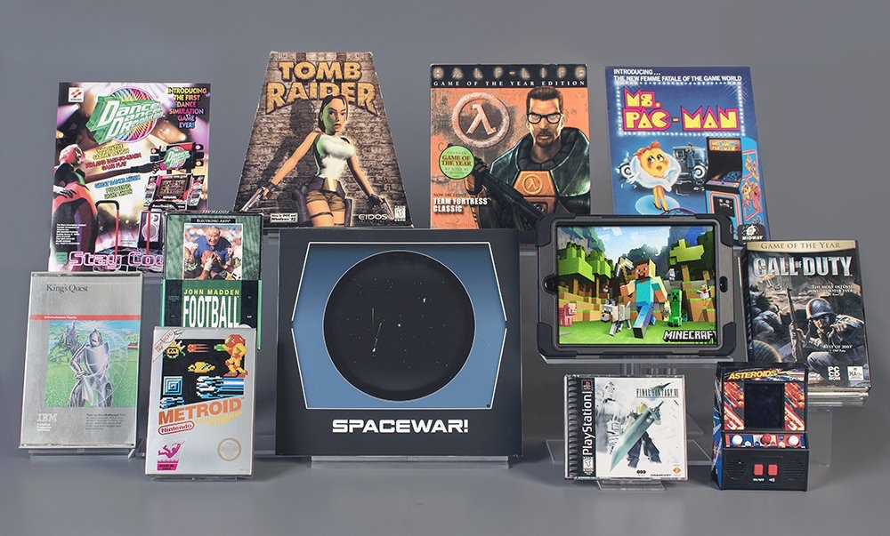

28 marca 2018
Posiadające w swych zbiorach największą na świecie kolekcję przedmiotów związanych z elektroniczną rozrywką, nowojorskie The Strong - National Museum of Play ogłosiło właśnie tegorocznych finalistów pretendujących do włączenia do listy gier wszech czasów (World Video Game Hall of Fame).

Poniższa lista została wyłoniona spośród tysięcy zgłoszeń, jakie muzeum otrzymało z ponad 100 krajów, jako tytuły, które odcisnęły piętno na historii nie tylko gier, ale całej popkultury:
Trzy z powyższych tytułów mają szansę zająć miejsce obok takich ikon jak Pac-Man, Pong czy Tetris. Laureaci zostaną wybrani w głosowaniu przez specjalną komisję, w skład której wchodzić będą dziennikarze, pracownicy naukowi i inne osoby związane z branżą gier video, a zwłaszcza z ich historią oraz rolą w społeczeństwie.
Rozszerzenie listy gier wszech czasów odbywa się już po raz czwarty, ale w tym roku gracze po raz pierwszy w historii będą mogli oddać swój głos. Na stronie muzeum zorganizowano sondę, gdzie każdy raz dziennie może zagłosować na wybraną grę. Wyniki głosowania i ogłoszenie laureatów odbędzie się na specjalnej ceremonii 3 maja w siedzibie muzeum.
News nie mógłby być kompletny bez podania pełnej listy obecnych "członków" Hall of Fame: